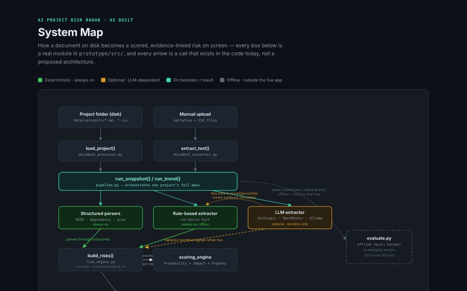

Capstone · team of 3
AI Project Risk Radar
An early-warning tool that reads a project's status reports, risk log, plan and minutes, flags compounding risks with the evidence behind each one, and leaves the decision with the project manager.
- Python
- FastAPI
- React + TypeScript
- LLM extraction
- Evaluation harness